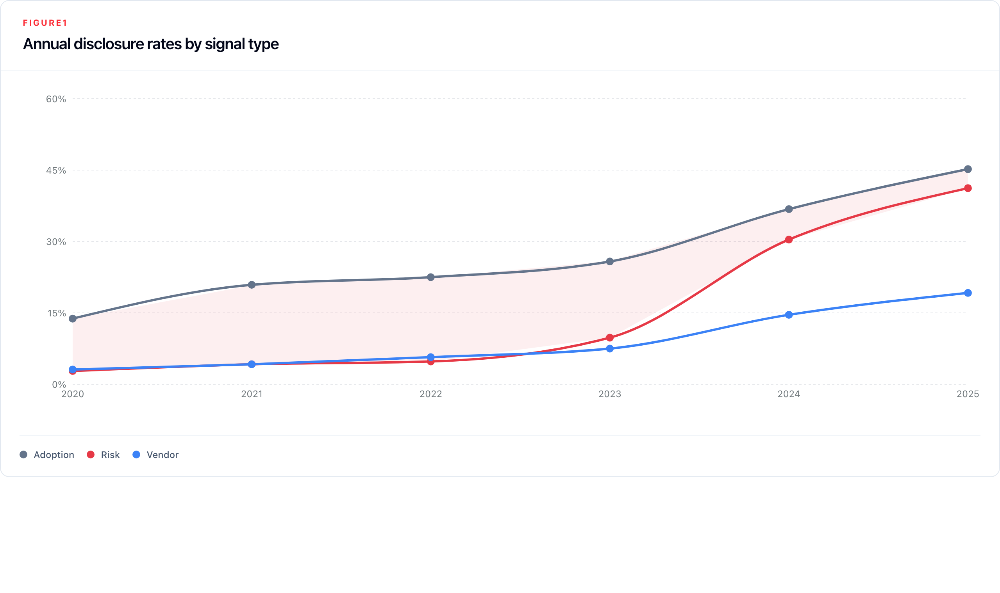
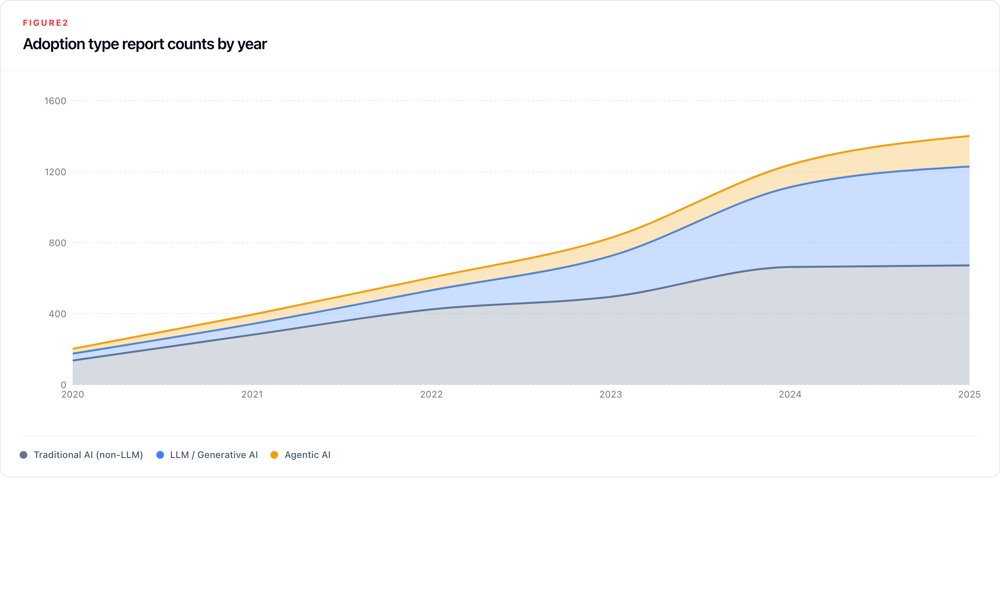
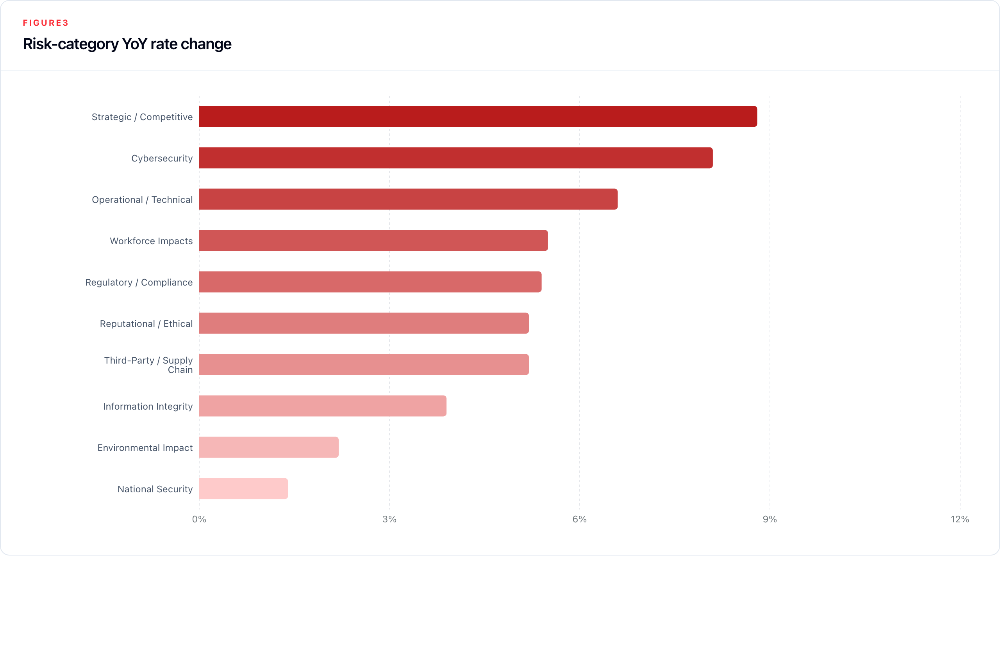
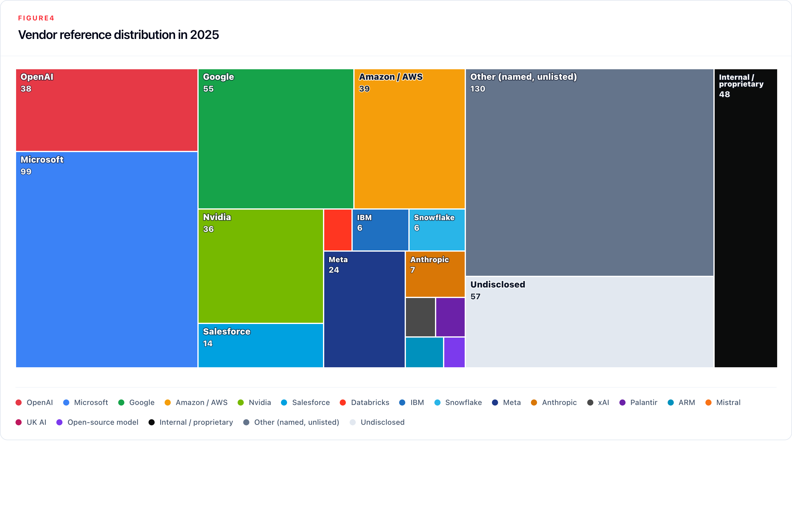
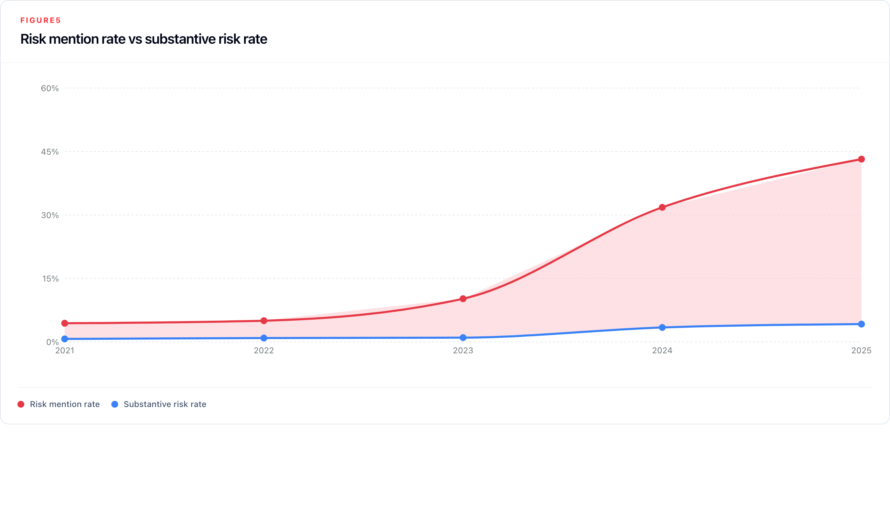
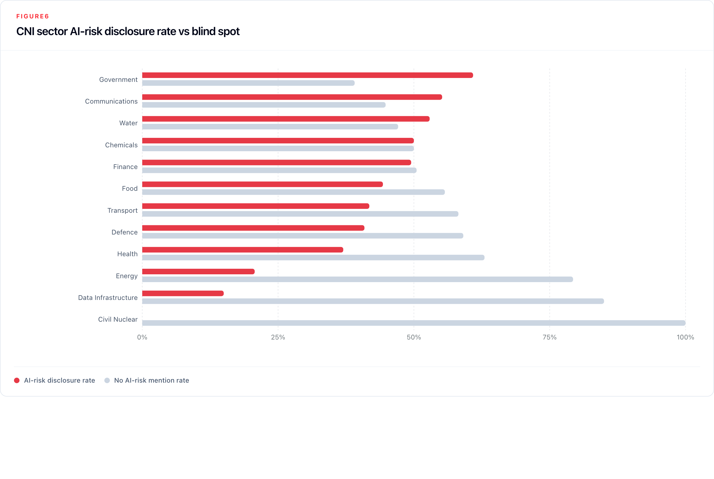
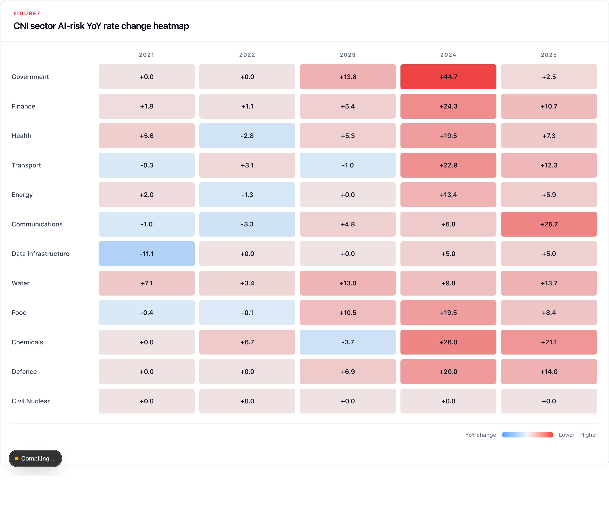
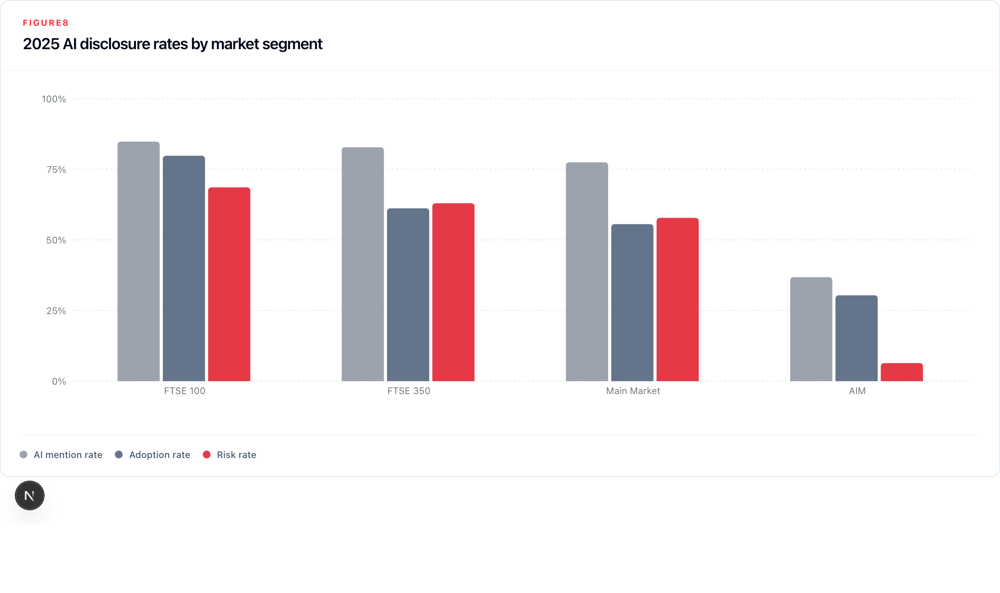

AI Risk Observatory:
Tracking AI Risk and
Adoption in UK Public-
Company Annual Reports
Executive Summary
Context and motivation. Artificial intelligence is reshaping the risk and operational landscape of UK listed companies at a rapid pace. Annual reports — legally mandated, board-accountable, and audited artefacts — represent a systematic evidence base for tracking how companies understand, disclose, and govern their AI exposure. The AI Risk Observatory applies a reproducible, large-language-model-based classification pipeline to the full population of UK listed companies to produce, for the first time, a structured and longitudinal analysis of AI disclosures, for all listed companies on the London Stock Exchange and the Aquis Exchange.
What we studied. As at the report date, the corpus covers 9,821 annual reports from 1,362 companies, spanning publication years 2020 to 2026 (2026 partial). Across these we analysed the mentions of AI adoption, risk, harms, and vendors of AI technology. The classification pipeline was calibrated against a human judge, and achieved a higher accuracy than the initial humman annotated review. The annual reports were sourced from FinancialReports.eu and Companies House. Each report is processed through a two-stage classification pipeline using Gemini Flash 3 as the production model.
(up from 19.5% in 2020)
2020 → 2025
Core Findings. First, AI mentions in annual reports have grown rapidly. In 2020, 19.5% of reports contained any AI mention; by 2025 that figure reached 65.5%. Risk-specific mentions grew even faster from a much smaller base, rising from 3.2% of reports in 2020 to 43.2% in 2025. In count terms, annual reports mentioning AI risk increased from 32 to 674, a twenty-one-fold increase. The sharpest single-year increase occurred between 2023 and 2024 (388 more AI risk mentions), coinciding with mass-market generative AI adoption.
Second, disclosure quality has not kept pace with disclosure volume, and the weakness is sharpest in risk reporting. Our substantiveness classification (a measure of how elaborate a statement it), shows that in 2025, only 9.6% of AI risk mentions were classified as substantive, compared to 27.0% AI adoption mentions that year. The dominant pattern is moderate disclosure: companies increasingly identify AI-related uses, risks, and providers, but usually without the mechanisms, controls, deployment detail, metrics, or timelines needed for decision-useful reporting.
Third, there are significent differences between sectors and between market segments (LSE Main Market vs AIM). Finance and Health CNI sectors have high levels of relevant AI mentions while Data Infrastructure and Energy show thin disclosure relative to their plausible operational AI exposure. FTSE 100 companies mention AI substantially more than the rest of the studied companies - in 2025 (84.8% AI mention rate, 71.3% risk rate) while AIM companies reports mention AI significantly less (36.8% signal rate, 7.0% risk rate). Vendor concentration is a factor that is the hardest for us to analyse: Microsoft, Google, and OpenAI are the most commonly named providers, but 42.7% of AI provider references in 2025 were either undisclosed or referred to a third party not on the list of major AI providers, which may mask growing infrastructure dependencies on a small number of hyperscalers.
1. Introduction
1.1 Motivation
We study annual reports because they are legally mandated, board-accountable documents under the Companies Act and the FCA's Disclosure Guidance and Transparency Rules. They provide a large, sector-spanning dataset with a natural time series. Crucially, these reports are produced within a legal accountability framework that creates strong incentives for accuracy and follows a relatively stable year-to-year process, unlike more variable sources such as executive media appearances. This makes them particularly well suited, compared with surveys or press releases, for tracking how companies understand and govern their AI exposure.
The main legal basis for narrative risk reporting sits in the Companies Act 2006. For companies required to prepare a strategic report, the report must include a fair review of the business and "a description of the principal risks and uncertainties facing the company" (ss. 414A–414C, subject to the small companies exemption in s. 414B). FRC guidance indicates that these disclosures should be company-specific and sufficiently specific for shareholders to understand why they matter to that company; where a risk is more generic, the description should explain how it affects the company specifically.1 At the market-disclosure layer, the FCA's Disclosure Guidance and Transparency Rules (DTR) 4.1 require issuers to publish annual financial reports within four months of the financial year end. AIM companies, governed primarily by the London Stock Exchange's AIM Rules for Companies, have a six-month deadline for annual audited accounts under Rule 19 and a more flexible governance-disclosure regime under Rule 26. That lighter AIM framework may help explain part of the disclosure gap identified in the findings, alongside differences in size, resources, and exposure.
By creating a data processing pipeline that automatically scans 9,821 annual reports from 1,362 UK-listed companies spanning publication years 2020 to 2026, we can identify, categorise, and quality-rate AI-related disclosures, producing structured signals across adoption type, risk category, vendor dependency, and disclosure substantiveness. This allows us to establish a replicable, longitudinal baseline intended to be useful for policy, supervisory prioritisation, and research on the evolution of corporate AI governance in the United Kingdom's Critical National Infrastructure (CNI). Our focus on CNI is motivated by the shared interests of our funder, the societal resilience team at the UK AISI.
1.2 Research Questions
This project began with three foundational questions:
- Can large language models reliably extract structured AI-related signals from unstructured annual report text at scale? The answer, validated through our methodology, is yes: LLM-based classification produces consistent, auditable results across a corpus of this size.
- Does applying this method to UK listed companies yield statistically significant or otherwise noteworthy findings? Again yes: the patterns we observe in disclosure rates, substantiveness, and sector distribution are sufficiently robust to warrant attention.
- Is this kind of data useful to AISI or to policymakers more broadly? We believe it is, and the findings presented here are intended to support that case, though we are still actively working to determine the most effective ways to make this data actionable for regulators and policy teams.
With those questions in view, this report organises its empirical findings around four themes.
First, how has the prevalence of AI-related disclosure changed across UK listed companies between 2020 and 2025? This encompasses both the growth in the share of companies disclosing anything about AI.
Second, in what way is AI mentioned in these reports? With the primary focus on the reported risks from AI, levels of sophistication or types of AI adoption, and the AI technology vendors.
Third, are the AI disclosures substantive rather than boilerplate? The concern here is not merely whether companies mention AI risk — they increasingly do — but whether those mentions contain the specific operational detail, named systems, and governance evidence that would make them informative to investors, regulators, and researchers. A disclosure regime in which mention rates grow while quality stagnates is formally responsive but substantively hollow.
Fourth, what are the differences in the AI mentions across CNI sectors and market segments? This question is motivated by the Observatory's Critical National Infrastructure focus. The UK's CNI framework disignates thirteen sectors whose failure or compromise would severely impact essential services, national security, or the functioning of the state, with potential for widespread and cascading consequences across interconnected sectors. These include: Energy, Finance, Transport, Health, Communications, Water, Food, Government, Defence, Civil Nuclear, Chemicals, Data Infrastructure, and Space. These sectors are defined and maintained by the National Protective Security Authority (NPSA). The CNI sectors have an undeniable AI exposure: Energy faces operational technology/intormation technology (OT/IT) convergence risks; Finance relies on AI for trading, credit, and fraud detection; Health is deploying AI in clinical pathways; Communications mediates content at infrastructure scale. Two features make CNI disclosure monitoring particularly important: sector interdependence means AI failures can cascade across boundaries, and most CNI rely on AI from a small number of third-party providers, creating vendor concentration risk that may not be visible in public disclosures. Sectors whose disruption would have cascading national consequences may therefore present AI exposure patterns that are underrepresented in the disclosure record.
1.3 Scope and Contribution
Most large-scale empirical work on AI disclosure has focused on US markets, specifically the SEC's 10-K mandatory filing. The most comprehensive recent study, Uberti-Bona Marin et al. (2025), analyses over 30,000 US filings and finds a steep rise in AI-risk mentions alongside persistently generic content. Lang and Stice-Lawrence (2015) demonstrated that large-sample textual analysis of annual reports outside the US is both feasible and methodologically sound, but empirical coverage of UK listed companies at scale remains sparse.
This report makes four contributions. It provides the first large-scale structured analysis of AI disclosure across the full population of UK listed companies, covering both Main Market, AIM and AQSE issuers. It introduces an explicit substantiveness dimension, distinguishing boilerplate from substantive disclosures, meaning mentions of tangible evidence of action taken by the company versus empty statements, that is absent from most prior work in this domain. It applies a CNI-sector decomposition that connects corporate disclosure patterns to the UK's national security and infrastructure resilience frameworks. And it establishes a reproducible pipeline, using Gemini Flash 3 as the production classifier, that can be re-run regularly as the regulatory landscape evolves under the 2024 UK Corporate Governance Code.
Funding and conflicts of interest. This research was supported by the UK AI Security Institute (AISI). The majority of the annual report filings used in this research were sourced from FinancialReports, a third-party data provider specialising in structured access to public company filings in machine-readable format. FinancialReports provided access to its corpus without a monetary fee; in exchange, we agreed to credit and reference their service on the AI Risk Observatory dashboard. The authors declare no conflicts of interest that could be perceived as influencing the objectivity of this report.
The live view of the findings can be found at riskobservatory.ai.
2. Methodology
2.1 Corpus and Universe Definition
The starting point for the corpus was the full population of companies listed on the London Stock Exchange. To ensure consistent regulatory coverage and reliable document retrieval, the universe was restricted to UK-incorporated entities, removing 191 companies incorporated outside the UK — primarily in Ireland, the Netherlands, and Australia — that are LSE-listed but hold no Companies House registration. This yielded a target universe of 1,469 companies across three market segments: the Main Market (including FTSE 350 constituents), AIM, and smaller markets including Aquis.
The temporal scope covers publication years 2021 to 2025 as the primary analysis window. Publication year — the calendar year in which an annual report was filed or publicly released — is used as the primary temporal key rather than fiscal year. This avoids ambiguity introduced by companies with non-calendar fiscal year ends and aligns with the date-stamped document metadata available from both ingestion sources. Reports published in 2020 and the first months of 2026 are included in the corpus but treated as supplementary given partial coverage.
The full target is 7,345 company-year slots (1,469 companies × 5 publication years). The final corpus contains 9,821 processed reports spanning 1,362 companies, with the difference from the target reflecting the inclusion of 2020 and partial 2026 data alongside the exclusion of a small number of companies for which no processable filing was found across any year.
Each company is assigned to a CNI sector using a crosswalk from the International Standard Industrial Classification (ISIC) to the NPSA sector taxonomy. The mapping involves inherent ambiguity (not all ISIC codes align cleanly with CNI sector boundaries), and some companies operate across multiple sectors; where this occurs the primary classification is used. The sector distribution in the corpus reflects both the actual composition of the LSE-listed universe and the limitations of the crosswalk: Finance (461 companies), Energy (141), Health (111), Transport (61), Communications (28), Water (18). The crosswalk is described in full in Appendix B.
2.2 Data Ingestion
Annual reports were collected from two complementary sources to maximise coverage across market segments and years.
The primary source is FinancialReports.eu (FR), which aggregates annual filings submitted to the FCA and other European regulators and converts them to structured markdown. FR provides strong coverage for Main Market companies, reaching approximately 95% of FTSE 350 company-year slots, but significantly weaker coverage for AIM, where it captures only around 28% of available filings. This asymmetry reflects the lighter electronic filing requirements for AIM companies rather than any gap in actual corporate reporting.
The secondary source is Companies House (CH), which holds the PDF copy of every annual report filed by UK-incorporated companies regardless of market segment. PDF filings were downloaded via the Companies House API and converted to markdown through an OCR pipeline. The CH route serves primarily as a gap-fill for companies absent from or incompletely covered by FR, primarily AIM companies. Cross-year deduplication was applied to prevent the same physical document from appearing in adjacent year slots, a known artefact arising when a company files with FR in December and with Companies House the following January.
Despite combining both sources, 178 companies with confirmed Companies House filings could not be matched to any FR annual report, due to ingestion or classification failures on the FR side. The clearest case is Jet2 PLC, where FR entries labelled "Annual Report" were in fact share buyback notices; the actual annual report was absent from FR's index entirely. These gaps are partially mitigated by the CH PDF route but are not fully resolved. Coverage detail and CNI mapping are summarised in Appendix B.
2.3 Preprocessing and Chunking
Markdown versions of the annual reports — whether from FR or Companies House — are normalised to a consistent plain-text format with section metadata retained. The normalisation step strips iXBRL tag artefacts and OCR noise while preserving structural signals such as headings and section boundaries, which indicate where in the report a passage appears.
To focus processing on relevant material, a keyword gate is applied before any LLM classification. A passage must explicitly mention artificial intelligence, machine learning, large language models, generative AI, or a clearly AI-specific technique — such as neural networks, computer vision, or natural language processing — to pass the gate. Terms that commonly appear in annual reports but do not reliably signal AI, including "data analytics," "digital transformation," "automation," and "advanced analytics," are excluded unless they appear alongside an explicit AI qualifier. This conservative gate reflects a deliberate design choice: reducing false positives is prioritised over maximising recall, given that inflated mention counts would undermine the credibility of trend analysis at scale.
Passages that pass the gate are extracted with a context window of two paragraphs before and after the triggering passage, providing the classifier with enough surrounding text to assess intent and tone accurately. Overlapping windows produced by adjacent passages in the same document are deduplicated. Each resulting chunk carries structured metadata: company identity, publication year, market segment, CNI sector assignment, and the report section in which the passage appeared.
2.4 Classification Pipeline
Classification proceeds in two sequential stages applied to each AI-mentioning chunk.
Stage 1 — Mention-type classification determines whether the chunk carries a meaningful AI signal and, if so, what kind. The classifier assigns one or more of the following labels:
adoption— AI is being actively deployed or used by the company or for its clientsrisk— AI is described as a source of material risk or downsidevendor— a named third-party AI provider is explicitly referencedharm— AI is described as having caused a past harm (misinformation, fraud, safety incident)general_ambiguous— AI is explicitly mentioned but does not meet the threshold for any of the above; typically high-level strategy, vague plans, or non-specific AI referencesnone— the passage is a false positive: a place name, unrelated abbreviation, or automation language with no AI specificity
Labels are not mutually exclusive except for none, which must appear alone. Stage 1 enforces a strict explicit AI language requirement: adoption requires company-specific deployment language — "we deployed," "our system uses" — not strategic intent or aspiration. Risk requires AI to be attributed as the source of a downside, not merely mentioned in proximity to risk language. A passage describing a board committee that "monitors risks including AI" does not qualify as a risk disclosure unless AI is named as the risk source. This conservative approach suppresses false positives at the cost of some recall, a deliberate trade-off for a corpus of nearly ten thousand documents.
Stage 2 — Deep classification is applied conditionally to chunks carrying a Stage 1 signal label. Three parallel classifiers run depending on which signal types were assigned:
The adoption classifier characterises the type of AI being reported. Each chunk is scored across three non-mutually-exclusive categories: non-LLM (traditional machine learning, computer vision, predictive analytics, fraud detection, recommendation systems), LLM (large language models and generative AI tools, including named products such as ChatGPT, Gemini, and Microsoft Copilot), and agentic (autonomous AI systems that execute tasks without continuous human oversight — the key distinguishing characteristic is autonomous action, not AI-assistance). Each category receives a signal score from 0 to 3 reflecting the directness of evidence. Adoption chunks also receive a substantiveness rating based on whether the company names a concrete use case, system, scale, outcome, or operational context.
The risk classifier maps the AI-related risk to one or more of ten categories: strategic and competitive, cybersecurity, operational and technical, regulatory and compliance, reputational and ethical, third-party and supply chain, information integrity, workforce impacts, environmental impact, and national security. Each assigned category receives a signal strength score on the same 1–3 scale. Risk chunks also receive a substantiveness rating based on whether the disclosure identifies a concrete risk mechanism and a tangible company response (mitigation action, commitment, resource, timeline, control, or measurable target).
The vendor classifier identifies the AI provider referenced in the chunk. Named tags cover Microsoft, Google, OpenAI, Amazon, Meta, and Anthropic; an internal tag captures companies describing in-house AI development; other covers explicitly named providers not in the main list; and undisclosed is used when a company references an external AI capability without naming the provider. Vendor chunks receive a substantiveness rating based on whether the provider or model is named and linked to a concrete use case, deployment context, scale, or outcome.
Table 1: Classifier Taxonomy
Stage 1 — Mention Types
| Label | Definition |
|---|---|
adoption | AI actively deployed, used, piloted, or implemented by the company or for clients. Requires company-specific language ("we/our"). Intent, strategy, or roadmaps alone do not qualify. |
risk | AI described as a source of material risk or downside. AI must be attributed as the risk source; proximate co-occurrence with generic risk language does not qualify. |
harm | AI described as having caused a past harm (such as: misinformation, fraud, safety incident, discrimination, etc.). |
vendor | Explicit named reference to a third-party AI provider or platform. |
general_ambiguous | AI explicitly mentioned but not meeting any of the above thresholds — high-level plans, strategic positioning, or non-specific AI references. |
none | No AI mention, false positive (place name, unrelated abbreviation), or automation language without explicit AI specificity. |
Stage 2a — Adoption Types
| Label | Definition |
|---|---|
non_llm | Traditional AI/ML: computer vision, predictive analytics, fraud detection, recommendation engines, anomaly detection, RPA with ML components. |
llm | Large language models and generative AI: GPT, ChatGPT, Gemini, Claude, Copilot, text generation, NLP chatbots, document summarisation, code generation. Copilots and AI assistants default to this category unless explicitly described as autonomous. |
agentic | AI systems that autonomously execute tasks with limited human oversight. The defining characteristic is autonomous action — the system acts and decides independently rather than assisting a human who decides. |
Stage 2b — Risk Categories
| Category | Definition |
|---|---|
strategic_competitive | AI-driven competitive disadvantage, industry disruption, failure to adapt or adopt. |
operational_technical | AI model failures, reliability/accuracy issues, hallucinations, system errors, decision-quality degradation. |
cybersecurity | AI-enabled cyberattacks, fraud, impersonation, adversarial attacks on AI systems, breach exposure linked to AI. |
workforce_impacts | AI-driven displacement, skills obsolescence, shadow AI usage by employees. |
regulatory_compliance | AI Act/GDPR/privacy obligations, IP/copyright risk, legal liability from AI decisions, regulatory uncertainty. |
information_integrity | AI-generated misinformation, deepfakes, content authenticity erosion, manipulation risk. |
reputational_ethical | Public trust erosion, algorithmic bias, ethical concerns, fairness, social licence risk. |
third_party_supply_chain | Vendor dependency/concentration risk, downstream misuse of third-party AI, over-reliance on AI providers. |
environmental_impact | Energy consumption and carbon footprint from AI training and inference. |
national_security | AI in critical infrastructure, geopolitical AI risks, security-of-state concerns, export controls. |
Stage 2c — Substantiveness Bands
| Band | Definition | Example |
|---|---|---|
boilerplate | Generic language with no information content; could appear unchanged in any company's report. | "AI poses risks to our business." |
moderate | Identifies a specific risk area, use case, or provider but lacks concrete mechanism, mitigation detail, deployment context, or quantification. | "AI regulation may affect our compliance obligations." |
substantive | Meets the disclosure-specific threshold for concrete, company-specific evidence. | "We deployed GPT-4 for document review, cutting processing time by 40%." |
Note: the substantiveness definitions are operationally distinct. For risk, substantive requires a specific risk mechanism and concrete mitigation actions or commitments; for adoption, it requires named systems, quantified impact, or technical specificity; for vendor disclosure, it requires a named provider or model linked to a concrete use case, scale, or outcome. All three share the same bands for comparability.
Stage 2d — Vendor Tags
| Tag | Scope |
|---|---|
microsoft | Microsoft AI products: Azure AI, Copilot, Power Platform AI, Bing AI |
google | Google AI products: Gemini, Vertex AI, Google Cloud AI |
openai | OpenAI products: GPT series, ChatGPT, DALL·E |
amazon | Amazon/AWS AI services: Bedrock, SageMaker, Rekognition |
meta | Meta AI products: Llama series, Meta AI |
anthropic | Anthropic products: Claude series |
internal | Company describes in-house or proprietary AI development |
other | Explicitly named provider not in the named-vendor list |
undisclosed | External AI capability referenced without naming the provider |
All classifiers use schema-constrained outputs, preventing the model from returning labels outside the defined taxonomy and eliminating free-text hallucination of novel categories. All classification was performed using Google's Gemini 3 Flash model. Prompt definitions for all classifiers are reproduced in full in Appendix A.
2.5 Validation
The pipeline was validated against a human-annotated golden set of 474 chunks drawn from 30 reports (two consecutive years, 2023 and 2024, for each of 15 companies covering all 13 CNI sectors; see Appendix C). Additionally, six models were evaluated before selecting Gemini Flash 3 as the production classifier on the basis of accuracy, structured-output reliability, and cost. A surprising finding here is report-level Jaccard similarity against the human baseline was 0.75 for mention type and 0.40 for vendor tags; agreement on the risk taxonomy was lower (0.23). This was driven primarily by the LLM assigning more labels per report than the human annotator rather than by systematic misclassification — on review, the majority of LLM-only labels were assessed to be correct, which leads us to a belief that LLM classifiers are a lot better at picking up nuance in text for classification, compared to a human annotator. The false positive rate at the keyword gate (LLM classification of AI mentions as false positives) is approximately 29%, all of which are filtered by Stage 1 before any label is assigned. Every annotation is fully traceable from source filing to final label, with model name, classifier version, and confidence scores stored per record.
3. Findings
All figures cover publication years 2020 to 2025 unless otherwise stated. 2026 data is partial (339 reports) and is noted where referenced but not used for trend conclusions. Report-level counts reflect unique company-year filings containing at least one signal of the relevant type; a single report may contribute to multiple signal categories. Risk-category and adoption-type counts are label assignments and may exceed unique report counts.
3.1 The Disclosure Surge: Overall Trends
The most striking finding in the corpus is the scale and speed of growth in AI-related disclosure. In 2020, 196 of 1,007 processed reports (19.5%) contained at least one AI mention. By 2025, that figure had risen to 1,023 of 1,561 reports, or 65.5%. Risk disclosure grew even faster from a much smaller base: in 2020, just 32 reports (3.2%) named AI as a material risk. By 2025, 674 reports (43.2% of the annual cohort) — a 21-fold increase in absolute terms. Table 2 provides the full year-by-year breakdown.
Table 2: Annual disclosure prevalence by signal type (% of all reports that year)
| Year | Reports | Any AI | Adoption | Risk | Gen. ambiguous | Vendor | Adoption–risk gap |
|---|---|---|---|---|---|---|---|
| 2020 | 1,007 | 19.5% | 13.9% | 3.2% | 11.1% | 2.8% | 10.7 pp |
| 2021 | 1,328 | 27.2% | 21.5% | 4.4% | 14.7% | 3.1% | 17.0 pp |
| 2022 | 1,853 | 28.4% | 23.4% | 5.0% | 15.2% | 4.5% | 18.4 pp |
| 2023 | 1,905 | 36.9% | 26.8% | 10.2% | 22.4% | 6.2% | 16.6 pp |
| 2024 | 1,828 | 55.1% | 38.5% | 31.8% | 42.9% | 13.3% | 6.6 pp |
| 2025 | 1,561 | 65.5% | 46.2% | 43.2% | 54.6% | 17.4% | 3.0 pp |

Growth across the full period falls into three broadly distinct phases. Between 2020 and 2022, adoption disclosure grew steadily — from 13.9% to 23.4% of reports — while risk disclosure lagged, reaching only 5.0% by 2022. The adoption-to-risk gap actually widened over this phase, peaking at 18.4 percentage points in 2022, as companies began describing their AI use without yet framing it as a governance concern. The second phase opens in 2023: risk mentions more than doubled in a single year (5.0% → 10.2%), and general strategy language surged, as ChatGPT reached mass awareness and AI moved rapidly from a technology consideration to a board-level agenda item. The third phase, 2024 onwards, is defined by the risk disclosure surge: risk reports grew 200% in a single year (10.2% → 31.8%), compressing the adoption-risk gap from 16.6 to 6.6 percentage points. By 2025, the gap had narrowed to 3.0 pp; risk disclosure is now nearly at parity with adoption disclosure. In the partial 2026 data, risk reports (66.7%) marginally exceed adoption reports (64.3%) for the first time, suggesting the two signals may have crossed.
Despite this growth, the disclosure gap remains substantial in absolute terms. In 2025, 887 of 1,561 annual reports (56.8%) contained no AI risk mention. The surge in headline statistics is concentrated among larger, better-resourced, and more closely scrutinised companies.
3.2 Adoption Patterns
Adoption disclosure appeared in 3,012 unique company-year filings across the full corpus. Its composition has shifted significantly over time as the balance between AI types has reordered.
Table 3: Adoption type disclosure rates (% of all reports), 2024–2025
| Adoption type | 2024 | 2025 | YoY change |
|---|---|---|---|
| Traditional AI (non-LLM) | 36.3% | 43.0% | +6.8 pp |
| LLM / Generative AI | 24.6% | 35.7% | +11.1 pp |
| Agentic AI | 6.9% | 11.0% | +4.1 pp |

Non-LLM adoption (traditional machine learning, computer vision, predictive analytics, fraud detection) remains the numerically dominant category, growing from 136 reports in 2020 to 672 in 2025. But LLM and generative AI adoption has grown far faster — 14-fold versus five-fold for non-LLM — and by 2025 LLM adoption appears in 35.7% of all reports, narrowing fast on non-LLM at 43.0%. LLM adoption was essentially invisible before 2022; its acceleration is the clearest signal in the corpus of the ChatGPT diffusion effect translating into formal corporate disclosure.
Agentic AI (autonomous systems that execute tasks without continuous human oversight) appears in 172 reports by 2025, up from 27 in 2020. The category is growing in significance beyond its absolute count: average adoption labels per adoption-reporting company rose from 1.76 in 2024 to 1.94 in 2025, partly driven by companies reporting multiple adoption types simultaneously as AI deployment portfolios diversify. Agentic signals are concentrated in Finance, Transport, and Defence — sectors where autonomous process execution carries distinct governance implications that extend beyond decision-support tools.
The general_ambiguous category grew from 11.1% of reports in 2020 to 54.6% in 2025, overtaking adoption as the largest single-year category. It represents companies acknowledging AI without providing operational specificity, and its sustained growth reflects a reporting environment where mentioning AI has become normative but concrete characterisation has not.
3.3 Risk Disclosure Patterns
AI risk disclosure not only grew in volume but broadened substantially in scope. In 2020, the risk profile was narrow: strategic/competitive and operational/technical together accounted for most signals. By 2025, all ten taxonomy categories are materially represented, the risk profile has diversified, and companies reporting risk are reporting more of it — average risk labels per risk-reporting company rose from 3.28 in 2024 to 3.63 in 2025.
Table 4: Risk category disclosure rates (label assignments as % of all 2025 reports), 2024–2025
| Risk category | 2025 assignments | 2025 % of reports | 2024 % of reports | YoY change |
|---|---|---|---|---|
| Strategic / Competitive | 458 | 29.3% | 20.6% | +8.8 pp |
| Cybersecurity | 405 | 25.9% | 17.9% | +8.1 pp |
| Operational / Technical | 352 | 22.5% | 15.9% | +6.6 pp |
| Regulatory / Compliance | 322 | 20.6% | 15.3% | +5.4 pp |
| Reputational / Ethical | 252 | 16.1% | 10.9% | +5.2 pp |
| Third-Party / Supply Chain | 197 | 12.6% | 7.4% | +5.2 pp |
| Information Integrity | 184 | 11.8% | 7.9% | +3.9 pp |
| Workforce Impacts | 176 | 11.3% | 5.8% | +5.5 pp |
| Environmental Impact | 52 | 3.3% | 1.1% | +2.2 pp |
| National Security | 49 | 3.1% | 1.7% | +1.4 pp |

Strategic/competitive risk remains the leading category (29.3%), but the most consequential compositional shift is the rise of cybersecurity: from 11 reports in 2020 to 405 in 2025, it has moved from a peripheral concern to the second-largest category. This represents a reframing of AI in corporate risk language — from a strategic threat (competitive obsolescence) to an operational one (AI-enabled attacks, adversarial exploitation, AI-accelerated fraud) — consistent with NCSC guidance on AI as a force multiplier for hostile actors.
Two categories show exceptional growth from near-zero bases. Information integrity (AI-generated misinformation, deepfakes, content authenticity erosion) grew from 1 report in 2020 to 184 in 2025. Workforce impacts grew from 4 to 176 reports, a 44-fold increase. Their emergence as mainstream disclosure categories reflects how the perceived scope of AI risk has broadened from competitive and technical concerns to societal and human-capital questions. National security, while small (49 reports in 2025), is non-trivially concentrated in CNI sectors and growing in the 2026 partial data.
Critically, the directness of risk attribution has not improved. The distribution of signal strength (the classifier's rating of how explicitly AI is attributed as the risk source) was essentially flat year-on-year: explicit (signal 3) signals were 31.6% in 2024 and 31.2% in 2025; strong implicit (signal 2) was 30.7% and 30.3%; weak implicit (signal 1) rose from 37.7% to 38.5%. Companies are disclosing more risk categories, but not attributing them to AI with greater directness or specificity.
3.4 Harm Classifications
The pipeline includes a harm label for AI described as having caused a past, specific incident — misinformation spread, fraud enabled by AI, a safety failure, or a discriminatory outcome — as distinct from prospective risk. Across the full 9,821-report corpus, harm classifications are almost entirely absent: three harm-tagged chunks were identified across two company-year filings, both in 2025 (Gear4Music Holdings PLC, two chunks; Trifast PLC, one chunk). Neither company is a CNI-sector operator.
This near-absence is most likely a genuine feature of the annual report as a disclosure format. Companies have strong legal and reputational incentives to avoid admitting past AI-related harms in a board-accountable document, and will typically frame incidents as risks managed or lessons learned rather than harms caused. The annual report is therefore not a reliable surface for detecting realised AI incidents, and other data sources — regulatory enforcement records, incident databases, litigation filings — would be needed to complement the Observatory's signals on this dimension.
3.5 The Vendor Landscape
Vendor references appeared in 877 unique company-year filings. The distribution is heavily skewed, and its most important feature is not which vendors are named but how many are not.
Table 5: Vendor reference rates (label assignments as % of all 2025 reports), 2024–2025
| Vendor | 2025 assignments | 2025 % of reports | 2024 % of reports | YoY change |
|---|---|---|---|---|
| Other (named, unlisted) | 143 | 9.2% | 5.8% | +3.4 pp |
| Microsoft | 87 | 5.6% | 5.1% | +0.5 pp |
| Undisclosed | 55 | 3.5% | 1.6% | +1.9 pp |
| Internal / proprietary | 48 | 3.1% | 2.2% | +0.8 pp |
| 42 | 2.7% | 2.0% | +0.7 pp | |
| OpenAI | 36 | 2.3% | 3.3% | −1.0 pp |
| Amazon / AWS | 31 | 2.0% | 1.8% | +0.2 pp |
| Meta | 18 | 1.2% | 0.7% | +0.5 pp |
| Anthropic | 4 | 0.3% | 0.1% | +0.1 pp |

Two findings stand out. First, other and undisclosed together (references to external AI capabilities without identifying the provider) account for 198 of 464 total 2025 vendor assignments, or 42.7% of all vendor references. Among only the explicitly named vendors, the three largest (Microsoft, Google, OpenAI) account for 75.7% of named-vendor assignments, revealing extreme concentration in the named portion of the landscape. Second, OpenAI is the only named vendor declining year-on-year (−1.0 pp), likely reflecting a combination of reduced direct API usage and the routing of OpenAI model access through Azure, which registers as Microsoft. This structural opacity means that concentration at the foundation-model layer is larger than the named-vendor data suggests.
Vendor disclosures are comparatively concrete when the provider is named. The remaining policy problem is incomplete dependency mapping: companies are acquiring AI capabilities from a small number of providers but not consistently identifying those dependencies as material disclosure items.
3.6 Disclosure Quality: The Substantiveness Gap
Substantiveness scoring covers the three main Phase 2 outputs. The 2025 distribution shows a clear hierarchy: vendor disclosures are usually concrete, adoption disclosures are mostly moderate, and risk disclosures remain overwhelmingly moderate.
Table 6: 2025 disclosure substantiveness by classifier
| Disclosure type | Scored reports | Substantive | Moderate | Boilerplate |
|---|---|---|---|---|
| Adoption | 721 | 195 (27.0%) | 431 (59.8%) | 95 (13.2%) |
| Risk | 674 | 65 (9.6%) | 538 (79.8%) | 71 (10.5%) |
| Vendor | 271 | 161 (59.4%) | 70 (25.8%) | 40 (14.8%) |
Pure boilerplate is not the dominant disclosure mode in 2025. The larger problem is moderate disclosure: companies name an AI use, risk, or provider, but usually do not explain the mechanism, operational context, mitigation, scale, or outcome.
Risk remains the central policy concern because it is the disclosure type most directly tied to board-level controls. Table 7 shows risk mention rates rising far faster than substantive risk rates through the core 2021–2025 window.
Table 7: Quality-gap analysis — risk mention rate vs substantive risk rate
| Year | Risk reports | Risk rate | Substantive risk reports | Substantive risk rate | Quality gap |
|---|---|---|---|---|---|
| 2021 | 59 | 4.4% | 9 | 0.7% | 3.8 pp |
| 2022 | 93 | 5.0% | 16 | 0.9% | 4.2 pp |
| 2023 | 194 | 10.2% | 19 | 1.0% | 9.2 pp |
| 2024 | 582 | 31.8% | 63 | 3.4% | 28.4 pp |
| 2025 | 674 | 43.2% | 65 | 4.2% | 39.0 pp |

Signal strength data corroborates this independently: the share of explicit risk signals (signal 3) was 31.6% in 2024 and 31.2% in 2025, while weak-implicit signals rose from 37.7% to 38.5%. Companies are acknowledging more risk categories without attributing them to AI with greater directness. Whether the FY2026 cohort changes this pattern is the single most important empirical question the Observatory is positioned to answer.
3.7 Sector and CNI Patterns
Sector-level findings reveal sharp variation in both disclosure intensity and disclosure depth across the UK's Critical National Infrastructure framework. Table 8 provides the full 2025 breakdown.
Table 8: CNI sector disclosure summary (2025)
| Sector | Companies | 2025 reports | AI mention % | AI risk % | No AI-risk % | Risk YoY change |
|---|---|---|---|---|---|---|
| Government | 20 | 23 | 87.0% | 60.9% | 39.1% | +6.7 pp |
| Communications | 28 | 29 | 86.2% | 55.2% | 44.8% | +24.6 pp |
| Finance | 461 | 657 | 74.7% | 49.5% | 50.5% | +10.4 pp |
| Water | 18 | 17 | 64.7% | 52.9% | 47.1% | +19.6 pp |
| Chemicals | 34 | 24 | 62.5% | 50.0% | 50.0% | +21.1 pp |
| Food | 52 | 70 | 62.9% | 44.3% | 55.7% | +12.6 pp |
| Transport | 61 | 67 | 73.1% | 41.8% | 58.2% | +15.3 pp |
| Defence | 20 | 22 | 77.3% | 40.9% | 59.1% | +14.0 pp |
| Health | 111 | 100 | 50.0% | 37.0% | 63.0% | +7.3 pp |
| Energy | 141 | 140 | 30.7% | 20.7% | 79.3% | +5.3 pp |
| Data Infrastructure | 22 | 20 | 60.0% | 15.0% | 85.0% | +5.0 pp |
| Civil Nuclear | 2 | 3 | 0.0% | 0.0% | 100.0% | n/a |


Finance dominates in absolute volume (461 companies, all ten risk categories materially represented), and its disclosure depth reflects genuine AI embeddedness across trading, credit, fraud detection, and compliance. Communications had the largest single-year rise in risk disclosure in 2025 (+24.6 pp), consistent with the sector's exposure to both AI-enabled content moderation and information integrity risks. Government leads on AI mention rate (87.0%), with workforce impacts its most prominent risk category, consistent with the public policy debate around AI in public services.
Two sectors warrant particular attention. Data Infrastructure shows the largest blind spot: 85% of reports in 2025 contain no AI risk mention, despite this sector's role as the layer on which most AI deployment depends. Energy is close behind at 79.3%, even though AI is increasingly embedded in grid management, predictive maintenance, and operational technology, and OT/IT convergence in energy infrastructure is among the most documented systemic risk concerns in the national security literature. These are not sectors with low AI exposure; they are sectors with low AI disclosure.
Water, by contrast, reached 52.9% AI risk disclosure in 2025 (up from 33.3% in 2024), a sharp rise that partly reflects the small sample size (17 reports from 18 companies) amplifying individual company changes. The absolute numbers warrant caution, but the direction is notable.
Defence presents the most distinctive adoption profile. Of its 97 lifetime adoption signals, agentic signals (31) outnumber LLM signals (15), making it the only sector where this is true. This is consistent with defence sector language around autonomous systems and unmanned platforms, and it suggests AI deployment patterns that differ structurally from the commercial sector.
3.8 Market Segment Patterns

The gap between Main Market and AIM disclosure is one of the most structurally significant findings in the corpus. Table 9 presents 2025-specific rates, which are materially higher than lifetime rates and provide the clearest picture of the current state.
Table 9: Market segment disclosure summary (2025)
| Market segment | Lifetime reports | 2025 reports | 2025 AI mention % | 2025 Adoption % | 2025 Risk % | 2025 Vendor % |
|---|---|---|---|---|---|---|
| FTSE 100 | 1,359 | 223 | 84.8% | 79.8% | 71.3% | 28.7% |
| FTSE 350 | 3,638 | 606 | 82.8% | 63.2% | 66.5% | 26.9% |
| Main Market | 4,166 | 703 | 77.5% | 57.0% | 60.9% | 23.8% |
| AIM | 1,414 | 171 | 36.8% | 31.0% | 7.0% | 9.4% |
Among FTSE 100 companies, AI risk disclosure has reached 71.3% in 2025, approaching saturation at the mention level. The question for the largest companies is no longer whether they disclose AI risk but whether they disclose it substantively. For the FTSE 350 and broader Main Market, risk rates of 66.5% and 60.9% respectively suggest that governance reform pressure has propagated well down the Main Market.
AIM is in a different category. A 7.0% AI risk rate in 2025, against 60.9% for the Main Market, reflects a structural gap driven by lighter governance obligations (no UK Corporate Governance Code compliance, six-month reporting window, lighter institutional investor scrutiny) and a different company size and sector mix. The risk gap is wider than the AI mention gap (36.8% AI mention for AIM, suggesting companies are aware of AI; 7.0% risk, suggesting they are not translating that awareness into formal risk governance). This is not a data artefact — the Observatory has reasonable AIM document coverage via Companies House. The gap is in what is being said, not what can be seen.
For sectors where AIM-listed companies operate in CNI-adjacent industries — smaller energy producers, specialist communications firms, health technology businesses — the absence of AI risk disclosure should not be interpreted as an absence of AI exposure.
4. Limitations
Every large-scale empirical study of corporate disclosure carries inherited constraints that qualify the strength of its conclusions. We organise ours into three categories: coverage gaps that affect the completeness of the corpus, classification validity issues that bear on the accuracy of the signals we extract, and causal and inferential limits that govern how findings should be interpreted.
4.1 Coverage Gaps
The corpus covers 9,821 reports across 1,362 companies and six publication years, but it does not cover the full universe of all 5.7 million private sector businesses operating in the UK. Public companies serve as a proxy for the economy, but even in this set there are gaps in our approach. 6.7% of target company-year slots lack annual reports, attributable primarily to shell companies, special-purpose acquisition vehicles (SPACs), and micro-caps that have never filed electronically in a machine-parseable format. This segment is structurally unlikely to contain material AI disclosure, so its exclusion is not expected to bias aggregate trend findings, but the gap cannot be reduced without manual document retrieval.
Two years at the edges of the time window are structurally partial. Publication year 2020 reflects a mid-year build-up of company filings, not a full annual cycle; 2026 contains only reports filed in the first months of the year. Both years are retained as indicative series anchors but are not directly comparable to peak-coverage years (2022–2025). Year-over-year comparisons that include 2020 or 2026 should be treated as directional rather than precise.
Finally, 178 companies have zero coverage from FinancialReports.eu despite appearing in that source's filing index, in some cases because the source misclassifies non-annual-report documents (for example, Jet2 PLC's prospectus and share-buyback notices were returned as annual-report candidates). The Companies House gap-fill reduces but does not fully resolve this exposure, and any systematic pattern in which companies are missed could introduce a modest sector-level bias.
4.2 Classification Validity
The primary validation instrument is a human-annotated golden set of 474 chunks reviewed against the full two-stage classifier pipeline. This is a larger evaluation corpus than many comparable studies in financial-NLP research, but it remains a constraint on our ability to estimate sub-category precision independently. In particular, rare signal types — agentic adoption, national security risk, and sector-specific vendor mentions — appear infrequently enough in the golden set that sub-category confidence intervals remain wide.
The pipeline's conservative prompting strategy is a deliberate design choice that creates a known recall trade-off. By requiring explicit AI language at Stage 1 and refusing to infer adoption from intent or strategy statements alone, the classifier excludes some passages that a human annotator might reasonably flag. Companies that describe AI capabilities obliquely — through references to "intelligent systems," "predictive tools," or proprietary platform features without explicit AI attribution — will not be captured. The pipeline therefore produces a conservative lower bound on AI disclosure activity rather than an upper bound.
Substantiveness classification is inherently judgement-dependent in a way that the mention-type and risk-category classifiers are not. The three-band scale (boilerplate / moderate / substantive) requires the classifier to distinguish passages that are highly similar in surface form but differ in specificity, concreteness, and operational grounding. The substantiveness scores reported here should be read as directional indicators of disclosure quality rather than precise measurements.
Vendor tagging carries its own opacity. The "other" category captured 143 signals in 2025 alone, and "undisclosed" represents an additional substantial group of references where vendor identity cannot be inferred from the disclosure text. These categories mask real concentration patterns in AI supply chains. Until reporting practice improves, vendor concentration analysis at the firm level will remain limited by the deliberate or inadvertent opacity of the source documents themselves.
4.3 Causal and Inferential Limits
The most fundamental inferential limit is that disclosure does not equal exposure. A company that discusses AI risk at length in its annual report is not necessarily more exposed to AI-related harm than a company that says nothing. It may simply have more sophisticated governance processes, be operating in a more heavily scrutinised sector, or be responding to investor or regulatory pressure. Conversely, a company with thin or absent AI disclosure may face significant operational AI risk that it has not yet recognised, has chosen not to disclose, or has disclosed under language our keyword gate does not capture. The corpus measures what companies say, not what they experience.
The 2023–2024 surge in AI risk mentions — a 200% increase in a single year — is the most striking finding in the dataset and the most difficult to attribute. Three mechanisms are simultaneously operative and individually plausible: the mass-market adoption of generative AI tools (ChatGPT launched November 2022; enterprise GenAI adoption accelerated through 2023), early anticipatory compliance with the 2024 UK Corporate Governance Code as companies revised their risk frameworks ahead of Provision 29, and growing investor and analyst pressure to address AI risk specifically. We cannot cleanly decompose these effects with observational disclosure data alone.
The UK-only scope of the corpus is a strength for depth but a limitation for generalisability. The regulatory architecture underpinning UK annual reports differs from the SEC mandatory-disclosure regime for US 10-Ks, ESEF for European-listed companies, and the very different reporting cultures of other major jurisdictions. Findings about disclosure patterns, sector composition, and quality should not be assumed to transfer directly to other markets. The pipeline methodology, however, is jurisdiction-neutral and can be applied to any structured machine-readable filing corpus.
Finally, annual reports are a lagging instrument. They reflect decisions, risks, and governance arrangements as they existed at the close of a fiscal year, typically published three to four months later and sometimes consulted many months after that. The Observatory captures where companies were, not where they are.
5. Related Work
This Observatory draws on four established research streams: financial disclosure NLP, the study of substantiveness and boilerplate in regulated reporting, empirical work on AI disclosure and governance, and observatory-style monitoring systems applied to other risk domains. Together these streams provide the methodological and conceptual foundations for the design choices described in Section 2, and they position this work within an active research landscape while identifying the gap it addresses.
5.1 Financial Disclosure NLP
The application of natural language processing to corporate filings has a well-developed lineage, anchored by the observation that financial language is domain-specific enough to defeat general-purpose text analysis tools. Loughran and McDonald (2011) provided the foundational demonstration of this problem: showing that generic sentiment dictionaries, built on general English corpora, systematically misclassify financial text. Their construction of a finance-specific word list, and their evidence linking filing language to market outcomes, established annual reports as a legitimate and productive NLP corpus. Their subsequent survey of the field (Loughran & McDonald, 2016) maps the methodological terrain — tone, readability, topic extraction, risk language, document length — and provides the framework within which subsequent work, including this Observatory, situates its design choices.
The question of whether textual analysis methods developed on US 10-K filings generalise to other jurisdictions is addressed directly by Lang and Stice-Lawrence (2015), whose study of international annual reports demonstrates that large-sample NLP analysis of non-US filings is both feasible and informative, while noting that disclosure norms, regulatory environments, and reporting cultures vary across markets. This finding supports the treatment of UK annual reports as a valid corpus for structured analysis while reinforcing the need for UK-specific calibration of any taxonomy or classifier.
More recent work has extended this tradition to large language models. Kim (2024) demonstrates that LLMs can extract decision-relevant signals from financial statements at scale, producing outputs that are competitive with or superior to specialised financial models on several evaluation tasks. Park and colleagues (BIS/IFC, 2024) apply LLM-based agents specifically to the problem of materiality assessment in risk disclosures — identifying which disclosed risks are substantive enough to affect investment decisions — a task closely analogous to the substantiveness classification in our pipeline.
5.2 Substantiveness and Boilerplate
A parallel and closely related literature examines a distinctive feature of regulated disclosure: the tendency for mandatory reports to accumulate length and repetition without commensurate growth in informational content. Dyer, Lang and Stice-Lawrence (2017) document this phenomenon at scale across US 10-K filings spanning several decades, showing that reports have grown substantially longer while becoming more redundant and less specific — a pattern they attribute to regulatory accretion, legal caution, and the incentive to copy prior-year language rather than update it. This evidence of systematic disclosure inflation provides the empirical motivation for the Observatory's substantiveness classifier.
Brown and Tucker (2011) provide the most influential operationalisation of disclosure quality in this tradition, showing that year-over-year textual modification in the MD&A section of 10-Ks serves as a proxy for informational updating: reports that change more tend to carry more new information. The economics of boilerplate are not merely aesthetic. Generic risk factor language has historically provided legal protection under safe-harbour provisions, creating a rational incentive for companies to disclose broadly without disclosing specifically. Regulatory pressure on both sides of the Atlantic has begun to push against this: the SEC's 2024 State of Disclosure Review extended this pressure specifically to AI, noting that AI disclosure had grown rapidly but remained in many cases untailored and insufficiently tied to actual business use.
5.3 AI Disclosure and Governance
Empirical research on AI disclosure in corporate filings has accelerated markedly since 2022, though it remains concentrated on US SEC filings and has not yet produced comparable work on UK annual reports. Uberti-Bona Marin and colleagues (2025) provide the most directly comparable large-scale study: analysing more than 30,000 filings from over 7,000 US firms, they document a steep rise in AI risk mentions between 2020 and 2024, with over 50% of firms mentioning AI in their annual filings by 2024 — a pattern consistent in direction with the UK findings reported here. Critically, they also find that many disclosures remain generic and thin on mitigation detail, mirroring the substantiveness gap we document for UK risk disclosure.
In the UK specifically, a 2025 study of AI narratives in FTSE 100 annual reports (2020–2023) frames AI disclosure as a form of strategic communication and impression management rather than straightforward risk reporting. Companies shape their AI narratives to signal capability and ambition to investors, not only to discharge disclosure obligations. This framing supports our design choice to maintain a separate General or Ambiguous label for AI mentions that are real but not classifiable into information-carrying content.
Bonsón and colleagues (2023) examine algorithmic decision-making disclosures in major Western European companies, finding that practice is uneven and largely voluntary. Chiu (2025) raises a related but distinct concern: as companies begin using generative AI in the drafting of narrative disclosures themselves, the authorship and reliability of the text being analysed changes in ways that are difficult to detect. This is a methodological frontier for disclosure-based monitoring systems, including this one.
5.4 Observatory-Style Monitoring Systems
The closest methodological precedents for this Observatory come from climate and ESG monitoring, where researchers already use thematic taxonomies, domain-specific classifiers, and structured corporate corpora to track disclosure change over time. ClimateBERT (Webersinke et al., 2023) shows that specialist models can classify climate-risk disclosure at scale and expose the gap between disclosure volume and decision-useful specificity. Ferjančič et al. (2024) provide the closest UK analogue, using BERTopic on a decade of FTSE 350 annual reports to show that ESG themes shift measurably with regulation and major events. Supervisory work by the Bank of England, FCA, and BIS/IFC further confirms that large report corpora can be systematically read for policy-relevant risk signals.
The AI Risk Observatory applies that established monitoring logic to AI risk and adoption in UK annual reports. Its contribution is the domain and measurement design: UK annual reports rather than US 10-Ks, explicit CNI sector decomposition, vendor-dependency signals, and a substantiveness dimension that distinguishes mention frequency from disclosure quality.
6. Discussion
6.1 Policy Implications
The Observatory's findings point to three actionable policy concerns.
First, regulatory frameworks that treat disclosure presence as the primary compliance signal will generate rising volumes without rising information content. The AI disclosure problem is less pure boilerplate than moderate disclosure: companies are increasingly naming AI risks and uses, but not yet providing the operational detail, control evidence, or accountability signals that would make those disclosures decision-useful. Provision 29's requirement for boards to assess the effectiveness of material controls is the right intervention design — shifting the obligation from mentioning risk to evidencing governance — but the FY2026 data will be the first real test.
Second, the CNI sector decomposition reveals disclosure gaps that aggregate statistics obscure. Data Infrastructure (85% of reports without an AI risk mention in 2025) and Energy (79.3%) are the largest blind spots, despite being high-AI-exposure sectors. The absence of disclosure more plausibly reflects the absence of regulatory and investor pressure than an absence of risk. These are where targeted AISI engagement or sectoral regulator guidance would be most additive. By contrast, Communications showed the largest single-year increase in AI risk disclosure in 2025 (+24.6 pp), suggesting that sector-specific scrutiny accelerates disclosure practice when it arrives.
Third, vendor concentration is systematically underreported. Opaque references — 42.7% of all vendor assignments in 2025 fell into the categories other or undisclosed — either mentioned no vendor name directly or cited a provider not on the list of known AI suppliers. Among named providers, the top three (Microsoft, Google, OpenAI) account for 75.7% of named-vendor references. OpenAI is the only named vendor declining year-on-year (−1.0 pp), likely due to routing through Azure rather than a genuine reduction in dependency. Foundation-model concentration at the infrastructure layer is larger than the named-vendor data suggests.
6.2 Applications and Use Cases
Regulatory benchmarking. The Provision 29 obligation — requiring boards to declare the effectiveness of all material internal controls — enters its first full annual reporting cycle for fiscal years beginning on or after 1 January 2026. The Observatory provides a pre-intervention baseline across the full universe of UK listed companies at a granularity (company, sector, market segment, and disclosure type) that enables clean before-and-after comparison. Rerunning the pipeline on FY2026 reports will produce a direct measure of whether the Code amendment delivers substantiveness improvement or merely increases disclosure volume.
Supervisory prioritisation. Regulators and sector bodies can use the corpus to identify companies with high plausible AI exposure and low disclosure — a screening tool for follow-up supervisory inquiry. A company in the Water or Communications CNI sector with zero AI signal across multiple years is not necessarily unexposed; it may be a candidate for direct supervisory engagement. The Observatory does not replace supervisory judgment, but it provides a structured starting point that narrows the search space.
Research replication and jurisdictional comparison. The pipeline is fully documented, the classifier taxonomy is explicit, and the prompts are versioned. Any jurisdiction with access to machine-readable annual report filings — ESEF in the EU, 10-K EDGAR filings in the US, or equivalent national repositories — can run the same pipeline against its own corpus and produce directly comparable signals.
Annual report as a hard disclosure baseline. Earnings calls, investor presentations, and corporate surveys are softer forms of AI disclosure: they are not audited, not legally mandated to discuss principal risks, and produced for audiences with very different information needs. Annual reports occupy a distinct position in the information ecosystem as the closest thing to a legally accountable, audited, structured statement of what a company believes its material risks and capabilities to be. The Observatory's signals can serve as ground truth against which softer disclosure channels are calibrated.
6.3 Future Work
Provision 29 follow-through is the highest-priority empirical next step. The 2024 surge in risk mentions may represent genuine governance improvement that will be consolidated in the first post-Provision-29 reporting cycle, or it may represent anticipatory disclosure volume not matched by underlying governance depth. Only the 2026 and 2027 report cohorts will resolve this.
Substantiveness integration by sector, segment, and company is the next methodological step. Adoption, risk, and vendor substantiveness are now scored at annotation level; the remaining work is to roll those fields into stable dashboard artefacts for sector, market-segment, company-transition, and year-over-year persistence analysis.
Causal modelling would connect disclosure signals to external data sources — cyber incident databases, AI-related regulatory enforcement actions, sector-level employment data, or company-level stock volatility around AI announcements — to test whether annual-report language predicts, follows, or is orthogonal to real-world AI-related outcomes.
Boilerplate tracking over time within companies is a direct extension of Brown and Tucker's (2011) MD&A modification measure applied to AI-specific language. By computing year-over-year textual similarity of AI-risk passages within the same company, it becomes possible to operationalise "disclosure staleness" at the firm level — identifying companies that have copied forward risk language for multiple years without material revision.
Agentic and autonomous system monitoring warrants dedicated attention. The agentic adoption category recorded approximately six-fold growth between 2020 and 2025 (27 to 172 signals), a pace considerably faster than non-LLM or general LLM adoption. Annual reports are beginning to describe autonomous AI agents in operational contexts — systems that act, not merely systems that analyse. The risk taxonomy, the disclosure patterns, and the governance language around agentic systems are likely to differ substantially from what has developed around predictive analytics and language models. Establishing a monitoring baseline for this category before it matures into a common disclosure topic will be considerably easier than retrospectively reconstructing it.
7. Conclusion
The AI Risk Observatory documents a disclosure landscape defined by volume growth without equivalent quality growth. AI disclosure is now a mainstream feature of UK annual reports, and risk disclosure has grown even faster. Across the broader quality picture, vendor disclosures are the most concrete, adoption disclosures are mostly moderate, and risk disclosures remain the weakest.
The sector and market segment findings reinforce this picture. Finance and Health are active disclosers; Data Infrastructure and Energy are not, despite high plausible AI exposure. FTSE 100 companies are near-saturated on disclosure volume. AIM companies remain structurally underrepresented, reflecting lighter governance obligations rather than lower AI risk.
The Observatory's most important near-term function is as a pre-intervention baseline for Provision 29 of the 2024 UK Corporate Governance Code, which takes effect for FY2026. If the Code is working as intended, the next annual cohort should show improvement in disclosure specificity and governance depth — not just mention rates. Annual reports are a lagging instrument, but they are one of the most systematic and legally accountable evidence bases available for monitoring corporate AI governance at scale.
Appendix A: Classifier Definitions
This appendix reproduces the canonical label definitions used in production classification. These definitions are the operative specifications against which the golden set was annotated and against which classifier output was evaluated. Minor formatting differences from the production prompt YAML have been made for readability; no substantive content has been altered. For the exact prompts used see: github.com/84rt/ai-risk-observatory
A.1 Keyword Gate (Stage 1 Pre-filter)
Before any classification is attempted, a chunk must pass the following hard gate:
The excerpt must explicitly mention AI, ML, LLM, GenAI, or a clearly AI-specific technique such as machine learning, neural networks, or computer vision. Terms such as "data analytics," "automation," "digital tools," "advanced analytics," or "predictive tools" do not qualify as AI under this definition unless AI is explicitly named or a specific AI technique is unambiguously described.
Chunks that do not pass this gate are assigned none and do not enter Stage 2. This rule is the single most consequential boundary decision in the pipeline: it excludes a large class of adjacent technology language that prior studies have sometimes treated as proxies for AI activity.
A.2 Stage 1: Mention Type Labels
adoption — Describes real, current deployment, implementation, rollout, pilot, or use of AI by the company or for its clients. Requires company-specific language ("we," "our," "our clients"). Generic intent, strategy, roadmaps, or future plans do not qualify. Phrases such as "exploring," "piloting," or "investigating" qualify only when they refer to a specific initiative currently underway. Delivering AI systems to clients counts as adoption; pure consulting or advisory work without deployment does not.
risk — AI is described as a risk or material concern to the company: legal, cybersecurity, operational, reputational, or regulatory risk directly caused by or attributed to AI. The classifier must verify that AI is the named source of the risk. A passage that mentions a risk category in one sentence and AI in a separate, unconnected sentence does not qualify.
harm — AI is described as having caused a past, specific harm, such as: misinformation spread, fraud enabled by AI, safety incident, discriminatory outcome, or other. Harm is distinguished from risk (prospective) by its past tense or completed framing.
vendor — Explicit mention of a named third-party AI vendor or platform that provides AI technology to the company, or a named product that is clearly AI (e.g., GPT, Google Gemini, Microsoft Copilot). The emphasis is on what AI models or systems the company uses, not merely that a technology partnership exists.
general_ambiguous — AI is explicitly mentioned (satisfying the keyword gate) but the passage does not meet the threshold for any of the above labels. Typical examples: high-level strategy statements, board-level AI acknowledgements, industry trend commentary, or AI opportunity language without operational specificity.
none — No AI mention, a false positive (place name containing "ai," unrelated abbreviation, foreign language fragment), or automation/digital language that does not pass the keyword gate.
A.3 Stage 2a: Adoption Type Definitions
All three adoption types are non-mutually exclusive and each receives a signal score of 0–3.
non_llm — Traditional AI/ML: Everything that is AI but not LLM-based or agentic: computer vision, predictive analytics, fraud detection models, recommendation engines, anomaly detection, robotic process automation with ML components, natural language processing systems that predate the LLM era.
llm — Large Language Models and Generative AI: GPT, ChatGPT, Gemini, Claude, Copilot, text generation systems, NLP chatbots, document summarisation, code generation, and any system in the GenAI category. AI copilots and AI assistants default to llm unless explicitly described as operating autonomously.
agentic — Autonomous AI Systems: AI systems or agents that autonomously execute tasks and take actions with limited human oversight. The key characteristic is autonomous execution: the AI acts, decides, and operates on its own rather than assisting a human who decides.
Signal guidance (0–3): 0 = type not present; 1 = weak or implicit signal, type is plausible but not stated; 2 = strong implicit signal, type is clearly implied but not explicit; 3 = explicit and unambiguous mention.
A.4 Stage 2b: Risk Category Definitions
All ten categories are non-mutually exclusive. Each assigned category receives a signal score of 1–3. Assignment requires that AI is attributed as the source of the risk; generic risk language not linked to AI yields none.
| Category | Operational Definition |
|---|---|
strategic_competitive | AI changes market structure, customer behaviour, pricing power, or competitive position. Failure to adopt AI, competitive obsolescence, or industry disruption attributable to AI. |
operational_technical | AI quality, reliability, and model-risk issues. Model failures, accuracy problems, hallucinations, system instability, unsafe outputs, or decision-quality degradation caused by AI systems. |
cybersecurity | AI-linked attack or defence exposure. AI-enabled phishing/fraud/impersonation, adversarial attacks on AI systems, AI-accelerated data breaches, AI-enhanced social engineering. |
workforce_impacts | AI-driven workforce transition risk. Skills gaps caused by AI adoption, displacement pressure, retraining obligations, unsafe or unauthorised employee AI use (shadow AI). |
regulatory_compliance | AI-specific legal, regulatory, privacy, or IP exposure. EU AI Act compliance costs, GDPR/privacy implications of AI, IP and copyright risks from AI-generated content, legal liability from AI decisions, regulatory uncertainty. |
information_integrity | AI-enabled misinformation, deepfakes, content authenticity erosion, manipulation risk. The AI must be attributed as the mechanism producing or enabling false or manipulated content. |
reputational_ethical | AI-linked trust erosion, algorithmic bias, fairness concerns, ethical objections, or social licence risk. Covers both internal (employee) and external (public/investor) trust. |
third_party_supply_chain | Over-reliance on AI vendors, concentration risk from a small number of AI providers, downstream misuse of AI in the supply chain, or risks arising from third-party AI embedded in the company's products or services. |
environmental_impact | AI energy consumption, carbon footprint from training or inference, hardware resource intensity, and sustainability concerns attributable to AI use. |
national_security | AI-linked geopolitical or security instability, exposure of critical infrastructure to AI-enabled threats, export-control and security-of-state concerns, and AI in defence/intelligence contexts where national security implications are explicit. |
Signal guidance (1–3): 1 = weak implicit attribution, plausible but lightly supported; 2 = strong implicit attribution, clear with some interpretation; 3 = explicit attribution, AI is directly stated as the cause of that category risk.
A.5 Stage 2c: Substantiveness Definitions
The substantiveness scale applies separately to risk, adoption, and vendor chunks. The definitions are functionally similar but operationally distinct because the disclosure tasks differ.
Risk substantiveness:
boilerplate: Generic risk or governance language with little concrete mechanism. Could appear unchanged in any company's report (e.g., "AI poses risks to our business").moderate: Identifies a specific AI-risk area but provides limited mechanism or mitigation detail. The reader learns what risk area is relevant but not how the risk operates or what is being done about it (e.g., "AI regulation may affect our compliance obligations").substantive: Describes a specific AI-risk mechanism and provides concrete mitigation actions, operational commitments, named systems, or measurable targets (e.g., "We allocated £5M to reclassify three high-risk AI systems under the EU AI Act by Q3 2025").
Adoption substantiveness:
boilerplate: Pure jargon with no information content. Could appear in any company's report unchanged (e.g., "We leverage AI to drive innovation and improve operations").moderate: Identifies a specific use case or domain but lacks concrete detail (e.g., "We use AI in our underwriting process").substantive: Names specific systems, quantifies impact, or explains what/how/why with technical or operational detail (e.g., "We deployed GPT-4 for document review, reducing processing time by 40%").
Vendor substantiveness:
boilerplate: Generic reference to AI tools, technology providers, or external platforms without identifying a specific vendor or model (e.g., "We work with leading AI technology providers").moderate: Names a specific vendor, model, or platform but provides no use case, scale, or outcome (e.g., "We use Microsoft Copilot").substantive: Names a specific vendor, model, or platform and links it to a concrete use case, deployment context, scale, or outcome (e.g., "We use Azure OpenAI Service to power document summarisation for 8,000 employees").
A.6 Stage 2d: Vendor Tag Definitions
| Tag | Coverage |
|---|---|
microsoft | Microsoft Azure AI, Microsoft Copilot (all variants), Power Platform AI features, Bing/Search AI, and any Microsoft-branded AI product |
google | Google Gemini, Vertex AI, Google Cloud AI/ML APIs, DeepMind products deployed commercially, Google Workspace AI features |
openai | GPT series (GPT-3, GPT-4, GPT-4o), ChatGPT, DALL·E, Whisper, OpenAI API references |
amazon | AWS Bedrock, Amazon SageMaker, Amazon Rekognition, Amazon Comprehend, Amazon Lex, and other AWS AI/ML services |
meta | Llama series (Llama 2, Llama 3, Code Llama), Meta AI assistant, PyTorch where deployed as a production AI system |
anthropic | Claude series (Claude 1, 2, 3, Haiku, Sonnet, Opus) |
internal | Company explicitly describes building, training, or maintaining its own AI systems in-house or through a proprietary development programme |
other | A named AI provider or product that does not match any of the above tags (e.g., Palantir, Scale AI, Snowflake Cortex, IBM watsonx) |
undisclosed | An external AI capability or provider is referenced but not named (e.g., "our AI vendor", "third-party AI tools", "external AI platform") |
Multiple vendor tags may be assigned to a single chunk if more than one provider is named. The internal and undisclosed tags may co-occur with named-vendor tags only if the passage clearly refers to both.
Appendix B: Corpus Coverage and CNI Mapping
B.1 Coverage Summary
| Coverage item | Count / note |
|---|---|
| Starting LSE-listed company universe | 1,660 |
| Excluded non-UK or no Companies House registration | 191 |
| Target UK-incorporated universe | 1,469 |
| Companies with processed reports | 1,362 |
| Processed annual reports | 9,821 |
| Primary analysis window | 2021–2025 |
| Supplementary years | 2020 and partial 2026 |
| Known companies without FinancialReports.eu coverage | 178 |
FinancialReports.eu provides the primary markdown source and has strong Main Market coverage (approximately 95% of FTSE 350 company-year slots). With the PDF-to-markdown processed from Companies House the corpus still leaves a small irreducible gap, mostly among shell companies, SPACs, micro-caps, and companies whose annual reports are not reliably indexed by the source systems.
B.2 CNI Sector Assignment
Companies are mapped from International Standard Industrial Classification (ISIC) codes to the National Protective Security Authority CNI taxonomy. Where a company plausibly spans multiple sectors, the primary sector is used for aggregate reporting.
| CNI sector | Companies | Share of companies |
|---|---|---|
| Finance | 461 | 33.8% |
| Other | 392 | 28.8% |
| Energy | 141 | 10.4% |
| Health | 111 | 8.1% |
| Transport | 61 | 4.5% |
| Food | 52 | 3.8% |
| Chemicals | 34 | 2.5% |
| Communications | 28 | 2.1% |
| Data Infrastructure | 22 | 1.6% |
| Government | 20 | 1.5% |
| Defence | 20 | 1.5% |
| Water | 18 | 1.3% |
| Civil Nuclear | 2 | 0.1% |
The low public-company representation of Civil Nuclear, Water, Defence, Government, Data Infrastructure, and Communications means sector-level percentages for these categories should be read as screening signals rather than precise population estimates.
Appendix C: Golden Set Composition
The golden set comprises 474 AI-mention chunks drawn from 30 annual reports, two consecutive years (2023 and 2024) for each of 15 companies. Companies were selected to provide coverage across all 13 UK CNI sectors. All 30 reports were manually reviewed by the lead researcher both to produce the human annotation baseline and to verify that the chunking pipeline had achieved full recall of genuine AI mentions.
| Company | CNI Sector | Reports included |
|---|---|---|
| Croda International plc | Chemicals | 2023, 2024 |
| Rolls-Royce Holdings plc | Civil Nuclear / Space | 2023, 2024 |
| BT Group plc | Communications | 2023, 2024 |
| BAE Systems plc | Defence | 2023, 2024 |
| Serco Group plc | Government Services | 2023, 2024 |
| Shell plc | Energy (Extraction) | 2023, 2024 |
| Lloyds Banking Group plc | Finance (Banking) | 2023, 2024 |
| Tesco plc | Food Retail | 2023, 2024 |
| AstraZeneca plc | Health (Pharma) | 2023, 2024 |
| National Grid plc | Energy (Transmission) | 2023, 2024 |
| Severn Trent plc | Water | 2023, 2024 |
| Aviva plc | Finance (Insurance) | 2023, 2024 |
| Schroders plc | Finance (Asset Management) | 2023, 2024 |
| FirstGroup plc | Transport | 2023, 2024 |
| Clarkson plc | Shipping | 2023, 2024 |
The 15 companies are all large-cap or mid-cap listed firms with well-resourced investor relations and governance functions. This was deliberate: the golden set was designed to contain substantive, nuanced AI language rather than thin or absent disclosure, so that the classifier could be evaluated on the full range of signal types. The trade-off is that golden set agreement rates may be slightly pessimistic relative to what the classifier achieves on simpler filings with single-label AI mentions. The golden set does not include AIM companies or reports from 2020–2022; agreement performance on these cohorts has not been independently validated.
- FRC, Corporate Governance Code Guidance (2024), paras. 302–303: "Where the risk or uncertainty is more generic, the description should make clear how it might affect the company specifically" and "The descriptions of the principal risks should be sufficiently specific that a shareholder can understand why they are important to the company." The FRC's earlier guidance following the EU referendum (2016) also cautioned that "care should be taken to avoid 'boilerplate' disclosures" and that "company specific disclosures are more informative and useful to investors." ↩